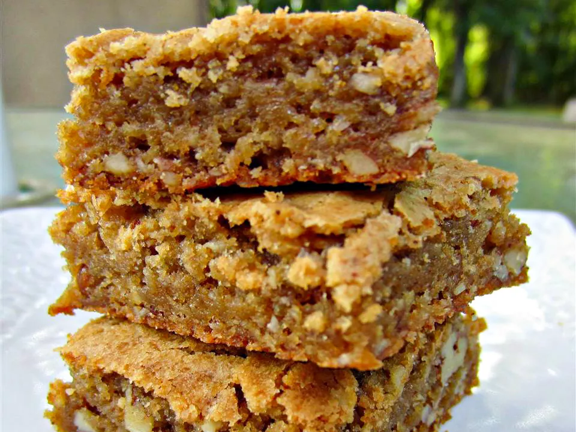

Butterscotch Brownies

Butterscotch brownies for the whole family!
Ingredients
Brownies:
- 1 cup butter, melted
- 1 cups light brown sugar
- 3 eggs
- 2 tsp vanilla extract
- 2 cups of flour
- 1/2 tsp salt
- 1 1/2 tsp baking powder
- 1 cup chopped walnuts
Frosting
- 2 tsp instant coffee
- 2 tbsp water
- 1/2 cup butter, softened
- 3 cups sifted confectioners' sugar
Directions:
- Preheat oven to 350 degrees F (180 degrees C). Grease an 11x7x2-inch pan
- Melt 1 cup butter in a large saucepan. Add 2 cups light brown sugar and beat well to mix. Cool the mixture slightly, then beat in eggs and vanilla.
- Sift together all-purpose flour, salt and baking powder. Stir it into the wet ingredients, then add the walnuts or pecans. Mix well.
- Spread batter into prepared pan and bake for 30-35 minutes or until a light gold. Cool in the pan for 10 minutes, then turn out of pan and let brownies finish cooling on a rack.
- To Make Frosting: Dissolve coffee in the water. Cream 1/2 cup butter with confectioner's sugar. Beat it until light. Blend the coffee into sugar mixture and spread frosting over the brownies. When frosting has set, cut brownies into squares. Enjoy!